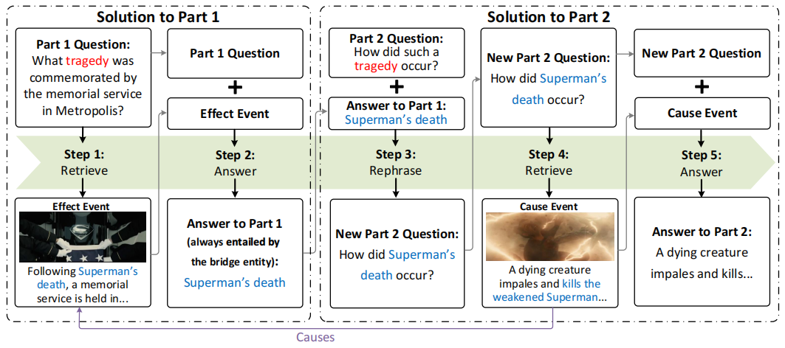
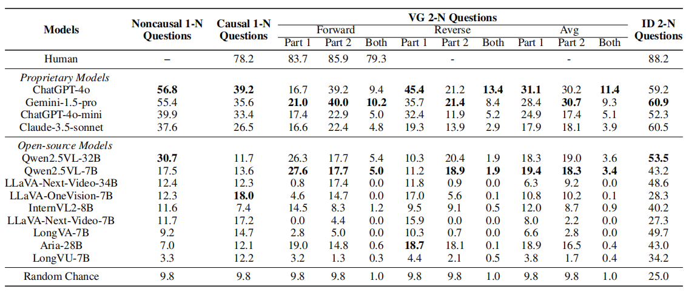
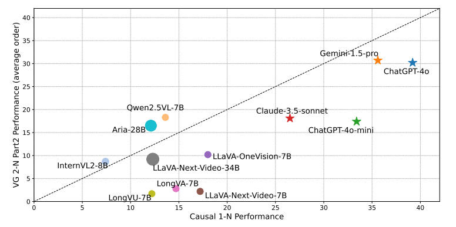
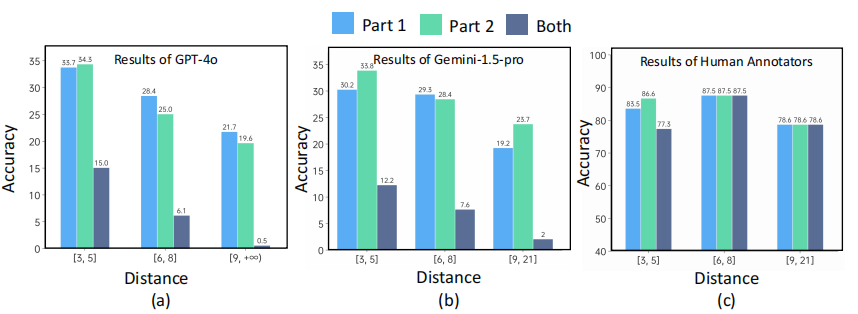

A benchmark designed to evaluate a model’s ability to jointly reason about causally related events that occur in two temporally distant segments within long videos.
...With Batman and Prince's help distracting it, Superman impales the monster.
(Cause) A dying creature impales and kills the weakened Superman with a bone protrusion.
Luthor is arrested, and Batman confronts him in prison, warning Luthor that he will always be watching him.
Luthor gloats that Superman's death has made the world vulnerable to powerful alien threats and that something bigger is coming to Earth.
(Effect) Following Superman’s death, a memorial service is held in Metropolis.
Clark is also declared dead, and Bruce Wayne, Lois Lane, Martha Kent, and Diana Prince attend a private funeral for him in Smallville...
1-Needle Question (Noncausal):
Who does the creature stab and kill? Select the scene that contains the answer to the question.
Scene 2
1-Needle Question (Causal):
What happened to Superman, leading to his memorial service in Metropolis? Select the scene that contains the answer to the question.
Scene 2
2-Needle Question (Visual Grounding):
(Part 1) What tragedy was commemorated by the memorial service in Metropolis, (Part 2) and how did such a tragedy occur? Select the scenes that contain the answers to the question.
Scene 5 for Part 1; Scene 2 for Part 2
2-Needle Question (Image Description):
(Part1) What tragedy was commemorated by the memorial service in Metropolis? (Part2) When the tragedy that causes the memorial service occurs, what color were the energy blasts emanating from thecreature? Choose the correct option.
A. Yellow
B. Blue
C. Red
D. White
Question Formulation
The 2-needle questions are constructed from a pair of cause and effect events.
Each question should require the VLM to first retrieve the effect event and then the cause event.
To formulate the question, we identify a bridge entity, which is an entity or a piece of information shared by the cause event and the effect event.
Part 1 of the question asks the VLM to resolve the bridge entity by retrieving the effect event.
Part 2 of the question requires the retrieval of the cause of the effect event.

Leaderboard
Please refer to
our code
to conduct your evaluation.

Findings
Two-needle Questions Are More Challenging Than One-needle

Performance Decreases with Increasing Needle Distance

BibTeX
@article{li2025two,
title={Two Causally Related Needles in a Video Haystack},
author={Li, Miaoyu and Chao, Qin and Li, Boyang},
journal={arXiv preprint arXiv:2505.19853},
year={2025}
}